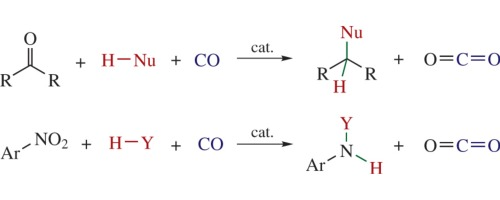
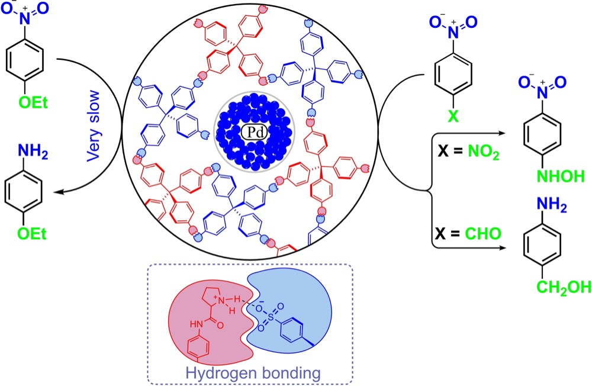

Research
Revealing the Mysteries of Science
The group works on practical, atom-economical catalysis: turning cheap, often-overlooked feedstocks — waste carbon monoxide, a pinch of fluoride, simple chiral salts — into reliable routes to complex molecules, with an eye on mild conditions and real waste reduction. Five directions run through that work, from an industrial waste gas repurposed as a reagent to metal catalysts switched on by a trace additive.

Carbon monoxide as a reducing agent
Steel is produced in enormous amounts every year, and carbon monoxide is its main waste gas. We repurpose that waste stream as a reducing agent for organic synthesis — turning a byproduct nobody wants into a tool for building molecules.
- Carbon monoxide as a selective reducing agent in organic chemistry — Mend. Commun., 2018, 28 (2), 113–122 (IF 1.694 · Citations: 48)
- Syngas Instead of Hydrogen Gas as a Reducing Agent — A Strategy To Improve the Selectivity and Efficiency of Organometallic Catalysts — ACS Catal., 2022, 12, 5145–5154 (IF 13.084 · Citations: 17)

Selective reductive amination
Running reductions without an external source of hydrogen lets us skip the hydrogenation-sensitive functional groups and protecting groups that conventional methods force on a molecule, keeping routes shorter and the substrate scope wider.
- Syngas as a synergistic reducing agent for selective reductive amination—a mild route to bioactive amines — New J. Chem., 2023, 47, 10514–10518 (IF 3.925 · Citations: 3)
- Enhancing the efficiency of the ruthenium catalysts in the reductive amination without an external hydrogen source — J. Catal., 2022, 405, 404–409 (IF 7.92 · Citations: 17)

Simplified Eschweiler–Clarke reaction
The classic Eschweiler–Clarke methylation runs in a large excess of formic acid, which also strips off acid-sensitive protecting groups such as TBS, MOM and Boc. We developed an acid-free version of the reaction that leaves those groups untouched.
- Simplified Version of the Eschweiler–Clarke Reaction — J. Org. Chem. 2024, 89, 5, 3580–3584 (IF 3.458 · Citations: 15)

Fluoride-activated catalysis
A small, in-situ dose of fluoride ion can switch an ordinary metal catalyst into a faster, more selective one. We've mapped this effect across ruthenium, nickel, zirconium, hafnium, vanadium and cobalt catalysts — better yields and enantioselectivity, sometimes at lower pressure, from the same catalyst that just needed a little fluoride.
- Straightforward Access to High-Performance Organometallic Catalysts by Fluoride Activation — ACS Catal., 2021, 11, 13077–13084 (IF 13.084 · Citations: 23)
- Application of transition metal fluorides in catalysis — Coord. Chem. Rev., 2024, 519, 216114 (IF 20.63 · Citations: 12)

Simple metal salts as catalysts
Instead of designing elaborate ligands, we use simple, chiral organic salts to support and steer metal nanoparticles — for example directing palladium nanoparticles toward the selective hydrogenation of nitroarenes.
- Chiral crystalline organic salts as supports of Pd nanoparticles forming selective heterogeneous catalysts for hydrogenation of nitroarenes — Mendeleev Commun., 2024, 34, 2, 204–205 (IF 1.786 · Citations: 3)
- Chiral Organic Salt Supported Pd Nanoparticles as Selective Heterogeneous Catalysts of Hydrogenation Reactions — ChemistrySelect, 2024, 9, 41, 831–833 (IF 2.09 · Citations: 1)
Details on every direction are in the publications.